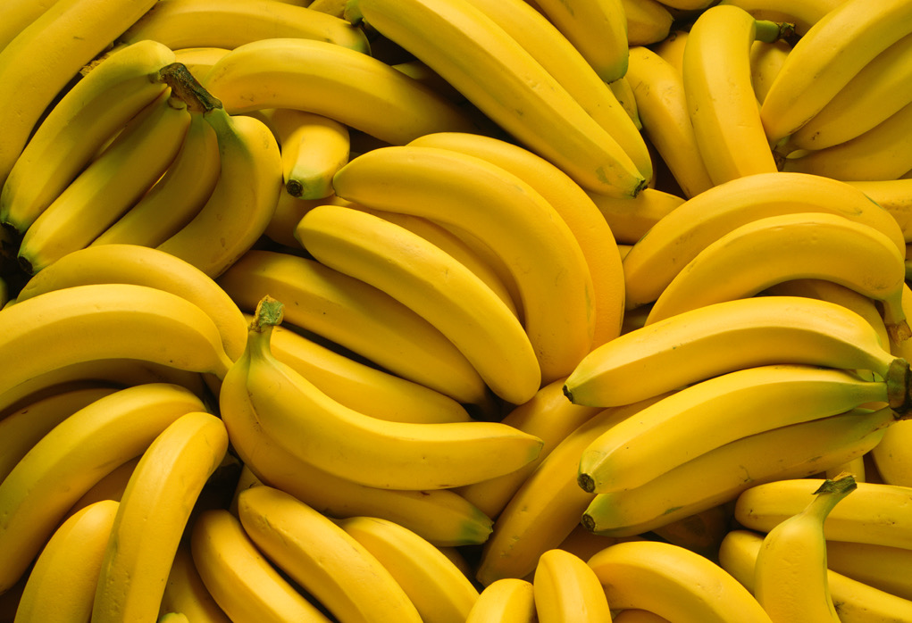

Banana Bread Recipe

Ingredients
- 1 cup granulated sugar
- 8 tablespoons (1 stick) unsalted butter, room temperature
- 2 large eggs
- 3 ripe bananas
- 1 tablespoon milk
- 1 teaspoon ground cinnamon
- 2 cups all-purpose flour
- 1 teaspoon baking powder
- 1 teaspoon baking soda
- 1 teaspoon salt
Directions
- Preheat the oven to 325 degrees F. Put Batter in a 9 x 5 x 3 inch loaf pan
- Cream the sugar and butter in a large mixing bowl until light and fluffy. Add the eggs one at a time, beating well after each addition
- In a small bowl, mash the bananas with a fork. Mix in the milk and cinnamon in another bowl, mix together the flour, baking soda and salt
- Add the bananas mixture to the creamed mixture and stir until combined. Add dry ingredients, mixing just until flour disappears
- Pour batter into prepared pan and bake 1 hour to 1 hour 10 minutes, until a toothpick inserted in the center comes out clean. Set aside to cool on a rack for 15 minutes. Remove bread from pan, invert onto rack and cool completely before slicing
- Spread slices with honey or serve with ice cream or just add butter
Drinks